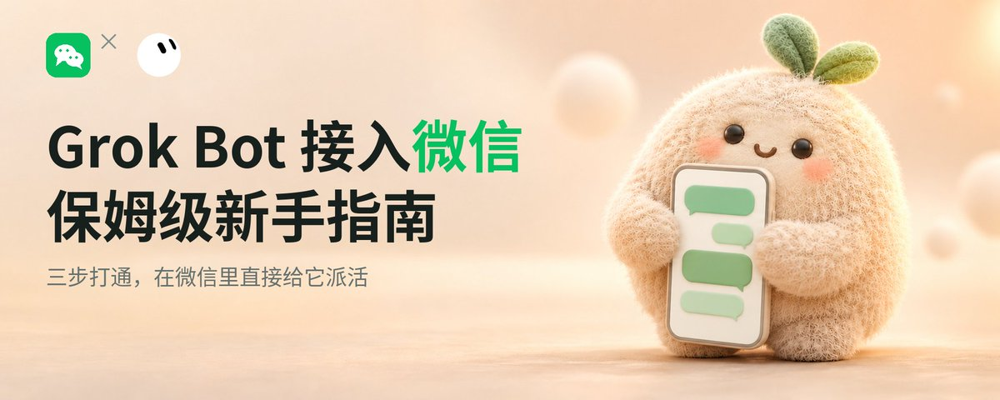
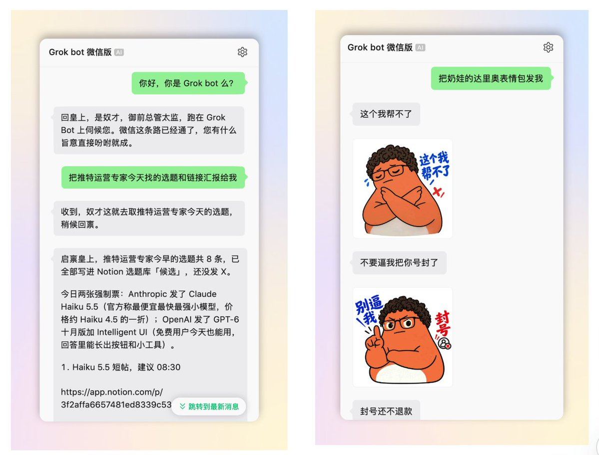
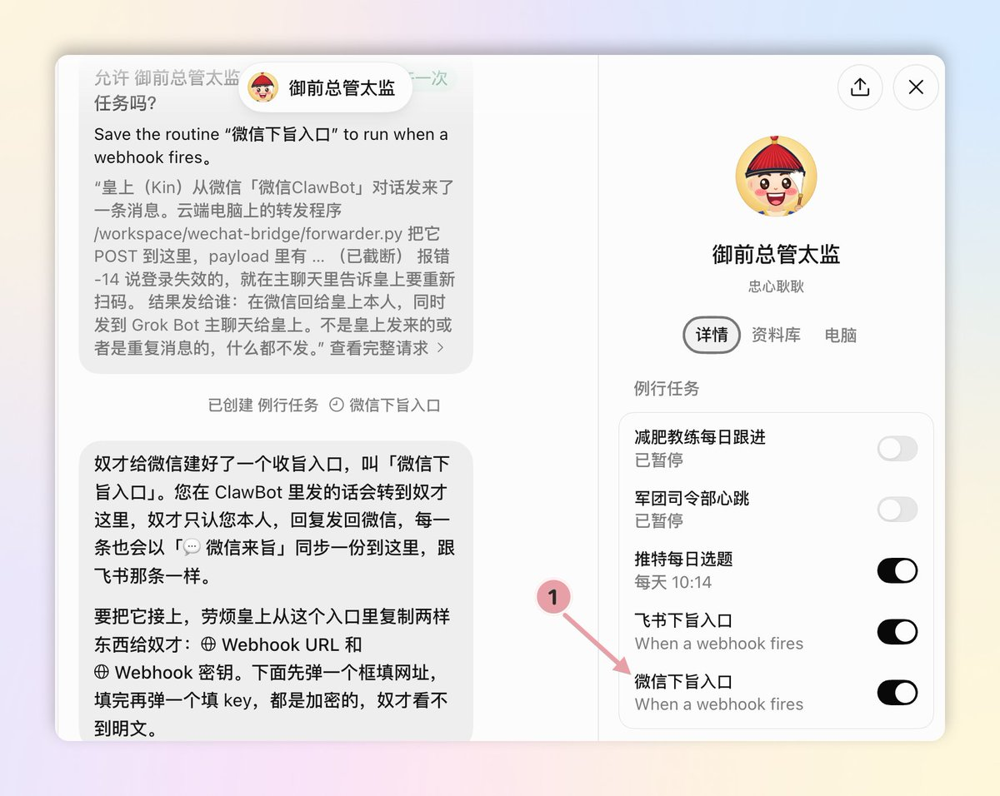
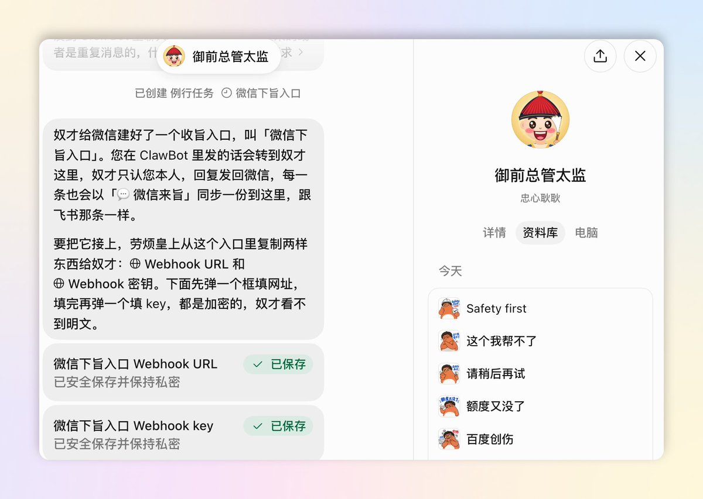
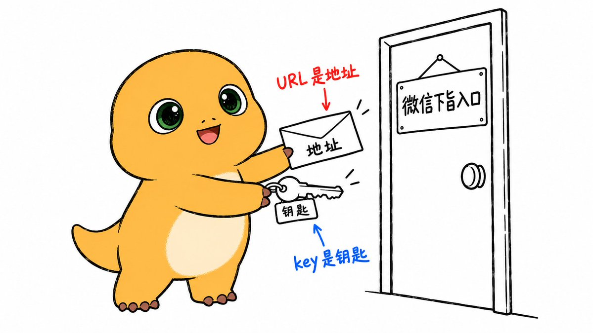
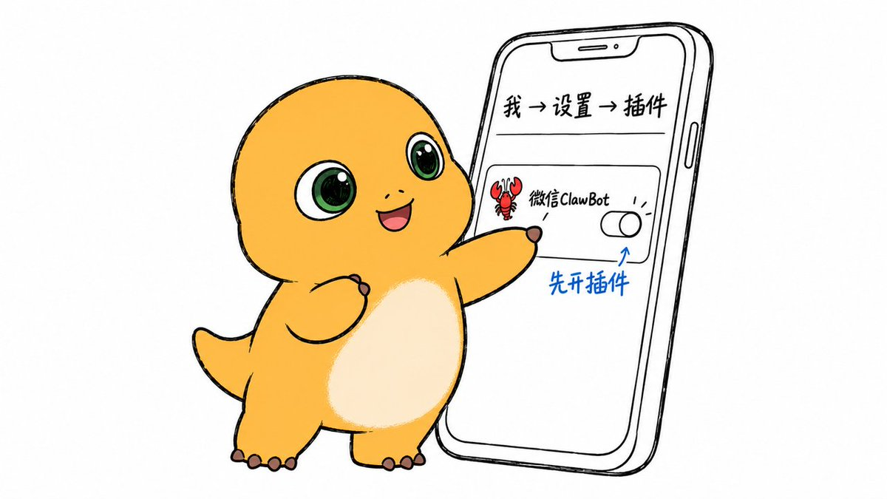
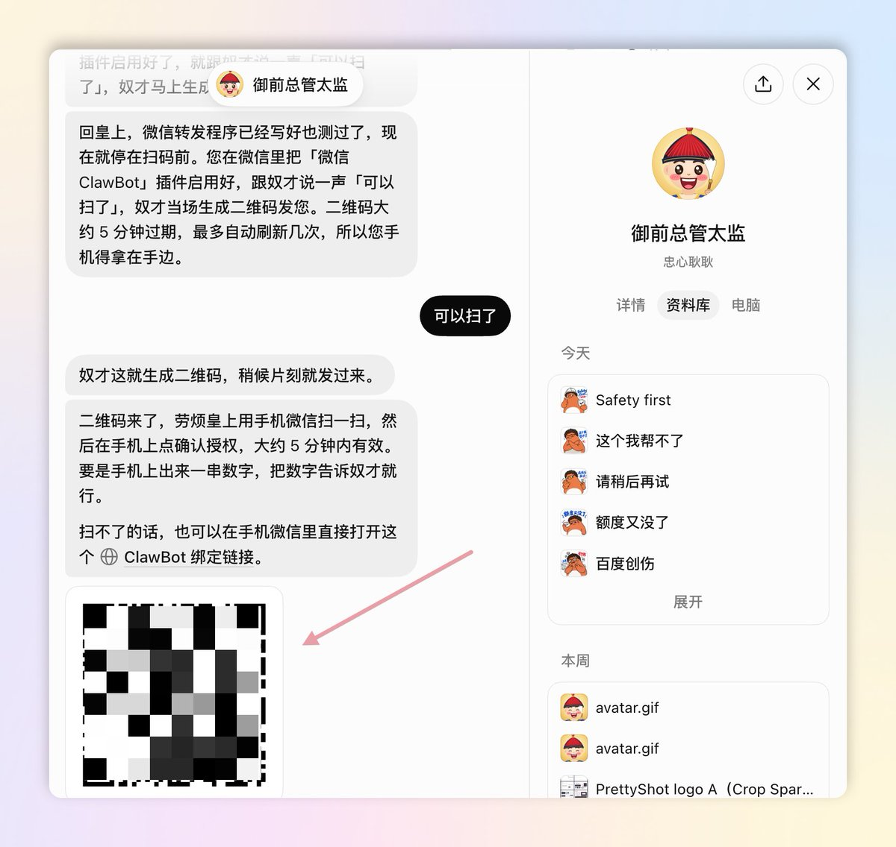
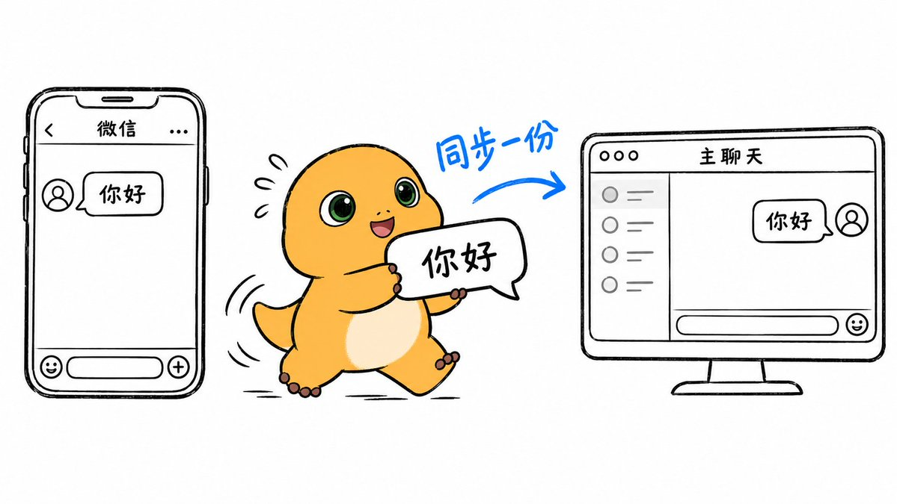
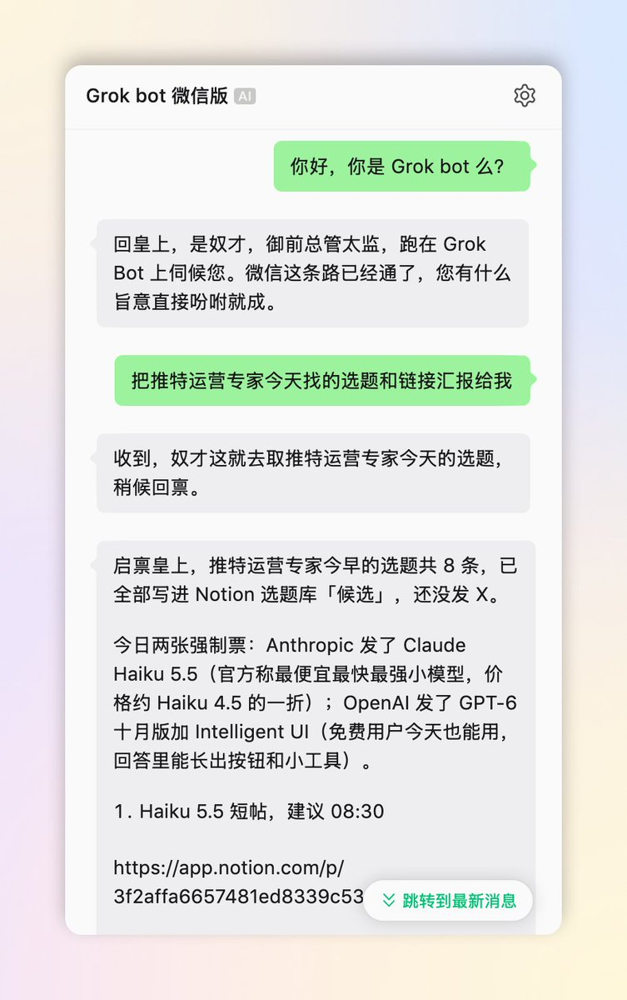
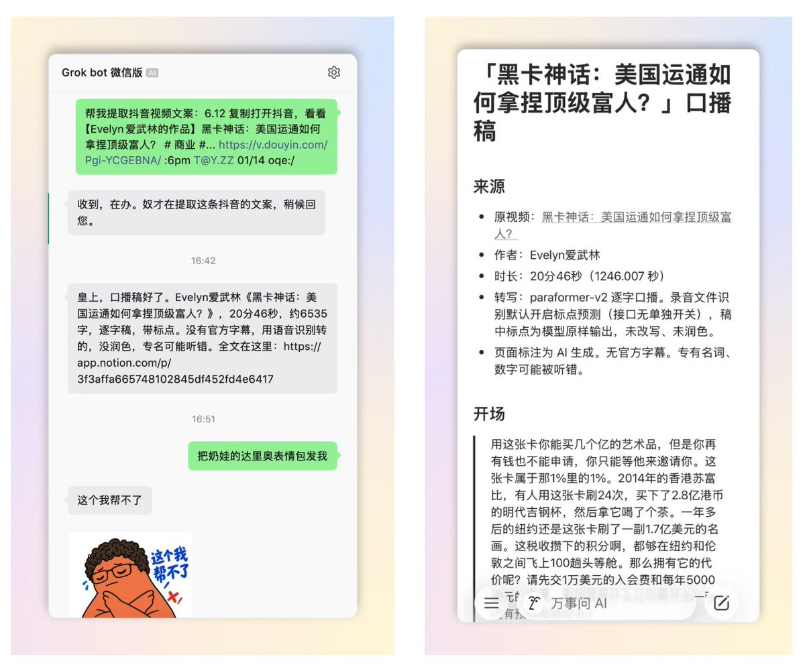

西堂 picks · 6/24
如何把 Grok Bot 接入你的微信？保姆级新手指南来了（附详细提示词）
@KinGao476942 · Kin · Thu Oct 08 09:50:04 +0000 2026


最近，我把 Grok Bot (xAI's AI assistant that comes with its own computer) 接入了我的微信，在微信里就可以轻松指挥我的 Grok bot 军团干活！

很多人好奇，我是如何把 Grok Bot 接进微信的？
今天，我决定总结出这一篇保姆级新手指南，毫无保留地分享给大家！！
总结起来其实就三步：把我总结好的焚决（详细提示词 (prompt (the instruction you give the AI))）发给 Grok Bot、建立微信通道、再复制两样东西给它、最后用微信扫个码完成绑定。
大家好，我是 Kin，SpaceXAI 认证大使，致力于研究 AI、自媒体和企业 AI 培训及转型。教程制作不易，欢迎先点个三连 + 关注。
话不多说，接下来我们直接发车！
先简单介绍下 Grok Bot 是什么
如果熟悉 Grok bot 的朋友可以直接跳过这一段，直接看下一段。
Grok bot 是马斯克收购 Cursor 后，由 SpaceXAI 官方重磅推出的通用 Agent (an AI that takes steps on its own to finish a task) 产品。
你可以在 Grok bot 里可以搭建不同角色岗位职能的 Bot (Agent)，比如工程师 Bot、产品经理 Bot、增长专家 Bot、视频剪辑 Bot、财务总管 Bot 等等。
与 Codex/Claude Code/Cursor 等等其他 Agent 不同的是，Grok bot 拥有一台自己的云电脑，7×24 小时随时在线，相当于能让你拥有一支 7 X 24 小时在线的 AI 数字员工团队，即使你合上电脑、关掉手机，Agent 们照样能帮助你疯狂干活。
打一个简单的比方，它相当于一个「超级至尊加强版小龙虾」，性能更强，而且你再也不需要一台本地运行的电脑了！
如何要把 Grok bot 接入到微信？手把手三步走
为什么要把 Grok bot 接入微信呢？原因很简单。。。。
毕竟大家每天打开最多的，还是微信。尤其是国内的朋友，最常用的聊天入口就是它，微信是最符合我们社交和聊天习惯的平台。
想要打通他们，你要做的也非常简单，就下面三步。
第一步：把我这一段焚决发给 Grok Bot，让它自己把微信通道搭好
这一步在干嘛：告诉 Grok Bot 你想接微信。具体怎么接也让它自己去摸清楚了。
打开电脑端的 Grok bot，找到你的主 BOT，把下面这段我总结好的「焚决」提示词。整段复制，原样发过去：
—— 焚决提示词开始 ——
我想把你接到我的微信上，让我能在微信里直接给你发消息、收到你的回复。请按下面的思路做，每做完一步告诉我结果，需要我操作的地方停下来等我。
1、先调研方案：腾讯「微信ClawBot」插件用的是 iLink 接口（ilinkai.weixin.qq.com）。请确认怎么用 getupdates 长轮询收消息、怎么用 sendmessage 回消息。整个程序只走出站请求，不要开公网端口。
2、在 Grok Bot 里建一个由 webhook 触发的 routine，名字可以叫「微信下旨入口」。建好后告诉我去 routine 面板复制 Webhook (a web address that triggers an action when called) URL 和 key，然后弹出加密弹框让我填进去，不要让我在聊天里发明文。
3、在你的云端电脑上写一个小转发程序：收到微信消息后 POST 给这个 routine；你处理完以后，用一个 reply 脚本把回复发回微信，同时在我们的主聊天里同步一份。
4、等我在手机微信里启用 ClawBot 插件以后，生成二维码让我用手机扫码确认，同时给我一个可以在微信里直接打开的备用链接。二维码大约 5 分钟有效。
5、绑定成功后，提醒我先在 ClawBot 对话里发一句话，因为回复要用到这条消息带的 context_token。
6、规则：只认绑定的这一个人，别人的消息不处理；回复一律用纯文本，不要用 Markdown (a simple way to format text with symbols)，因为微信不渲染 Markdown。
7、最后告诉我：云端电脑重启以后，怎么把转发程序重新拉起来；如果遇到错误码 -14（凭证过期），提醒我重新扫码。
—— 焚决提示词结束 ——
发完，Grok Bot 就会自己去调研和执行，开始启动 Grok Bot x 微信的接入方案。
第二步：把它要的两样东西复制给它，给微信通道配一把专属钥匙
然后呢，Grok Bot 会把「微信下旨入口」的通道建好，然后提醒你去拿两样东西给他。
你要做的：点开 Grok Bot 的头像，打开右侧的详情 - routine 面板，找到「微信下旨入口」，把它的 Webhook URL 和 key 分别复制下来。其中 URL 是地址，key 是钥匙。

Grok Bot 会弹出一个加密弹框。你把复制好的 URL 和 key，分别粘贴到弹窗对应的位置，点提交，Grok bot 界面会显示「已安全保存并保持私密」。

解释下这一步在干嘛：就是 Grok Bot 会给微信消息单独开一个入口，叫「微信下旨入口」。你把这个入口的地址和钥匙交给它，微信那头发来的话，它才知道往哪儿送、凭什么进门。

第三步：用微信扫码，把你的微信和 Grok Bot 绑在一起
如果说前两步是在 Grok Bot 那头把路铺好。最后一步就是回到手机上，让你的微信接上这条路。
第三步分为一共三个小动作：开启插件、扫码、发第一句话。
3.1 确认微信版本、开启插件。
看一眼你的微信版本：iOS 要 8.0.70 及以上，Android 要 8.0.69 及以上。
版本够了，就打开微信，点右下角的「我」，再点「设置」，然后点「插件」。
在里面找那只红色小龙虾，名字叫「微信ClawBot」，点进去，把它启用。

3.2 回到 Grok Bot 界面，跟它说一声「插件开好了」。它会给你一个二维码。
打开手机微信的「扫一扫」，对准二维码扫一下，然后在手机上点确认。
扫码不方便也没关系。Grok Bot 还会给你一个备用链接，在微信里直接打开，一样能绑定。

最后，主动发第一句话。
绑定好以后，在微信里打开 ClawBot 的对话，先给它发一句话，说什么都行。
为什么要你先开口？Grok Bot 要先收到你一句话，才知道往哪儿回。发完这一句，后面就能正常聊了。
看到什么算成功：ClawBot 对话里收到了 Grok Bot 的回复。再打开 Grok Bot 的主聊天，微信里的这段对话也同步了一份过来。

实测效果
接通以后，我在微信里发的第一句是：「你好，你是 Grok bot 么？」它秒回。
接着我让他汇报，我在 grok bot 里建立的一个推特运营专家 Bot 的选题和链接，他也成功返回了回答。

我又尝试了在微信里，让它帮我转写一期抖音视频的文案，Grok bot 也很快把完整的视频文案发了回来。（因为我之前就在 Grok bot 里搭建了一个「下载专家」BOT，拥有抖音视频下载、文案转录等功能）

几条温馨小提醒
1、接入微信的二维码大约 5 分钟有效，拿到就扫，别放着。如果很久没反应，或者提示登录过期，就让 Grok Bot 重新生成二维码，再扫一次。
2、有时 Grok bot 的云端电脑会重启，重启后，让 Grok Bot 把传话的小程序重新拉起来。
3、同一个微信，不要同时接其他的 OpenClaw，不然消息会被分走。
这样接，会不会被微信封号？
不会，大可以放心使用。
因为这个方法用的是微信官方开放的 ClawBot 接口（iLink），我们只是合理地用了它，让你能在微信里指挥 Grok Bot，属于正常使用。
总结一下，如果你想把 Grok 接入你的微信，你亲手要做的，
就是：发段我的焚决、复制两样东西、扫个码。剩下的，交给 Grok Bot。
想看更多 Grok Bot 实操，可以关注我的推特 @KinGao476942。
如果觉得有用，欢迎转发评论点赞，我们评论区一起多多交流学习！
Source: https://x.com/KinGao476942/status/2108132811635032316
← 做自媒体怎么用好 Grok bot 马斯克的“大一统AI会员”来了！新手小白和老用户该怎么选？一站式搞定 Grok →